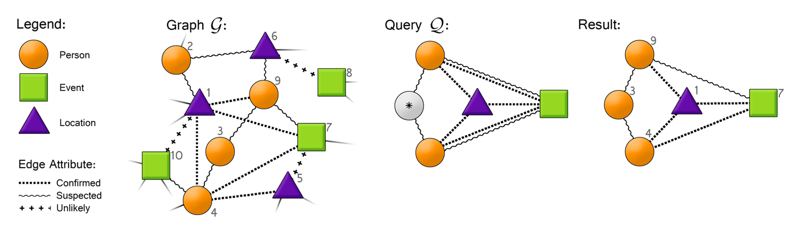

Multi Attribute Graph Engine (MAGE)
Paper
MAGE: Matching Approximate Patterns in Richly-Attributed GraphsRobert Pienta, Acar Tamersoy, Hanghang Tong, and Duen Horng Chau
An illustrative example of how MAGE finds patterns in an intelligence graph (left) with node and edge attributes. Node attributes: Person, Event, or Location. Edge attributes (amount of gathered intelligence for a pair of entities): Confirmed, Suspected, or Unlikely. A query (middle) looks for two indirectly related individuals, who were both confirmed at an event location and are believed to have attended the event (two lines connecting the corresponding nodes). The node with a star indicates a wildcard, which can take any attribute value. (All figures best viewed in color.) The rightmost figure shows an approximate match.
Abstract
Given a large graph with millions of nodes and edges, say a social network where both its nodes and edges have multiple attributes (e.g., job titles, tie strengths), how to quickly find subgraphs of interest (e.g., a ring of businessmen with strong ties)? We present MAGE, a scalable, multicore subgraph matching approach that supports expressive queries over large, richly-attributed graphs. Our major contributions include: (1) MAGE supports graphs with both node and edge attributes (most existing approaches handle either one, but not both); (2) it supports expressive queries, allowing multiple attributes on an edge, wildcards as attribute values (i.e., match any permissible values), and attributes with continuous values; and (3) it is scalable, supporting graphs with several hundred million edges. We demonstrate MAGE’s effectiveness and scalability via extensive experiments on large real and synthetic graphs, such as a Google+ social network with 460 million edges.
Materials
PDFBibTeX